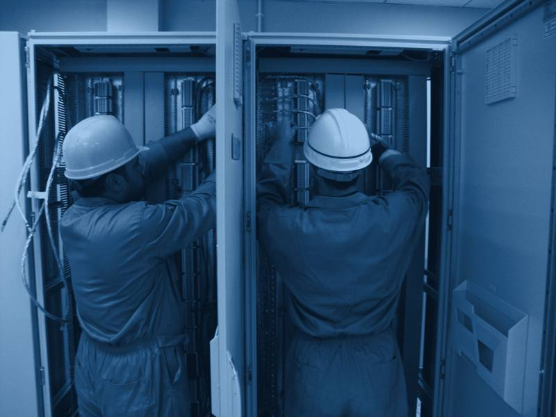
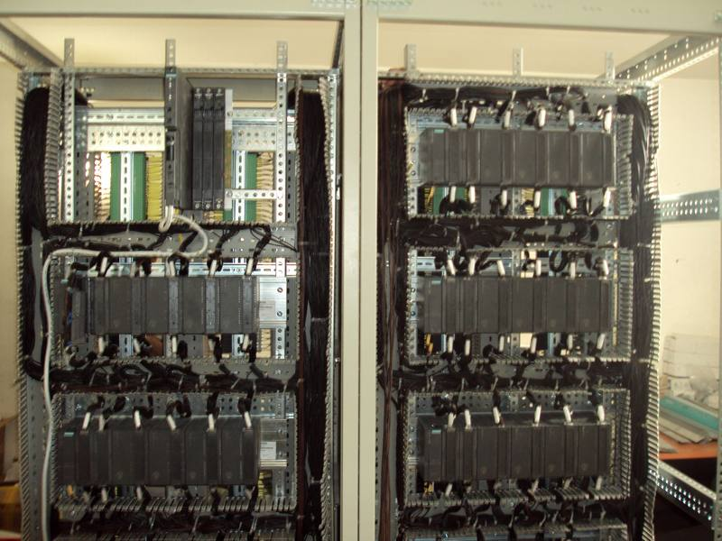
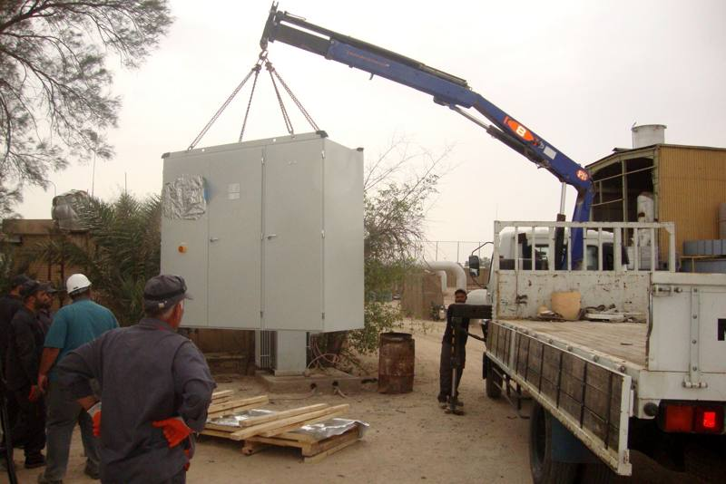
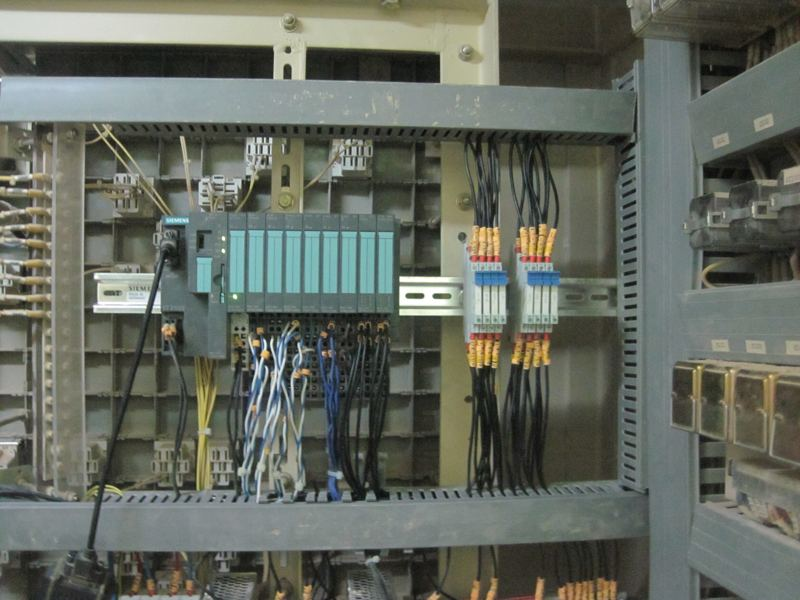

TAG · PLC-01
المتحكمات المنطقية وأنظمة السلامة
أنظمة SIMATIC S7-1500 وS7-1200 وS7-400، ومنها المتحكمات الآمنة والمزدوجة لأنظمة إدارة الحارقات والتوربينات ومحطات الضخ.
S7-1500 / S7-1200آمن (F)مزدوج (H)
تهندس الخضراء IES وتنفّذ وتشغّل أنظمة التحكم على منصة سيمنز SIMATIC، من لوحات PLC للمكائن المفردة إلى أنظمة DCS للمنشأة كاملة وأنظمة SCADA على مستوى البلد. شريك حلول معتمد من سيمنز للأتمتة الصناعية منذ عام 2013، وتعمل مع أنظمة سيمنز في العراق منذ عام 2011.
مشاريع جديدة وتأهيل منشآت عاملة، وفق المعايير الحالية ومواصفات الزبون.

أنظمة SIMATIC S7-1500 وS7-1200 وS7-400، ومنها المتحكمات الآمنة والمزدوجة لأنظمة إدارة الحارقات والتوربينات ومحطات الضخ.
نظام SIMATIC PCS 7 مع وحدات الإدخال والإخراج البعيدة ET 200SP / ET 200M لمحطات الكهرباء والمصافي ووحدات المعالجة.
محطات تشغيل WinCC ووحدات RTU وربط مراكز التحكم للمنشآت وخطوط الأنابيب وشبكات الماء والشبكة الكهربائية.
لوحات PLC والتوزيع ولوحات تحكم الوحدات ومراكز التحكم بالمحركات مع مغيرات سرعة SINAMICS ومعدات SIRIUS، بتصميم وتصنيع وفق مواصفات المشروع.
الأجهزة الميدانية والمحللات وقياس مناسيب الخزانات ومنظومات القياس وفق متطلبات API وATEX وOIML، نصباً وفحصاً ومعايرة.
مسح الموقع وترحيل المتحكمات والواجهات القديمة على مراحل إلى منصات سيمنز الحالية، مع إبقاء المنشأة عاملة أثناء التحويل.

تأهيل أنظمة التحكم والأجهزة الدقيقة على معالجات SIMATIC S7-400 الآمنة.

لوحات تحكم الوحدات والأجهزة الدقيقة ومراكز المحركات ومنظومات غاز الوقود لثلاث مضخات بتوربينات 25 ميغاواط.

لوحة كسارة ET 200S وتشغيل مغيرات سرعة المغذيات.

نصب مغذيات Schenck الوزنية وأنظمة تحكمها.
استبدال منظومة SCADA للشبكة الكهربائية الوطنية على مستوى البلد.
بشكل رئيسي أنظمة سيمنز: متحكمات SIMATIC S7-1500 وS7-1200 وS7-400، ونظام PCS 7، ووحدات ET 200 البعيدة، وWinCC لأنظمة SCADA والواجهات، ومغيرات SINAMICS ومعدات SIRIUS، ببرمجة TIA Portal وPCS 7.
نعم. نمسح النظام القائم ونخطط ترحيلاً على مراحل ونجدول التحويل وفق تشغيل المنشأة، كما في تأهيل نظام إدارة الحارقات في محطة بيجي.
نعم. نصمم ونصنّع لوحات PLC ولوحات تحكم الوحدات ومراكز التحكم بالمحركات وفق مواصفات المشروع، ونفحصها قبل تسليمها إلى الموقع.
توليد الطاقة والنفط والغاز والمصافي والإسمنت والماء والصرف الصحي والخدمات، في جميع أنحاء العراق انطلاقاً من مكتبينا في بغداد والبصرة.